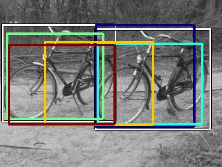
15687.084961
11051.800781
9136.158203
8132.021973
7714.532227
7647.391602
7072.920410
7032.647949
6755.130371

6729.602539
| Target image 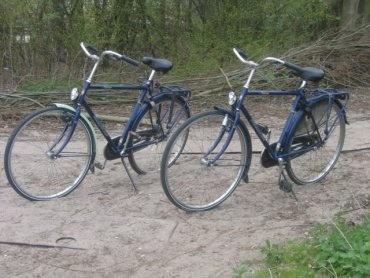 | 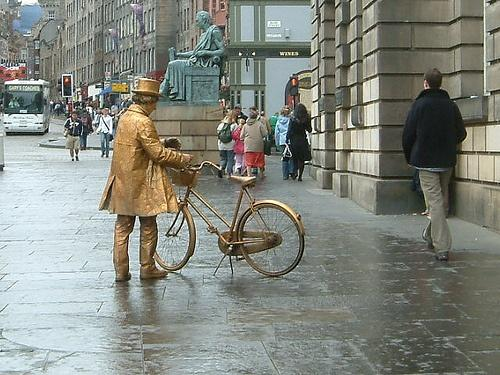 0.356459 | 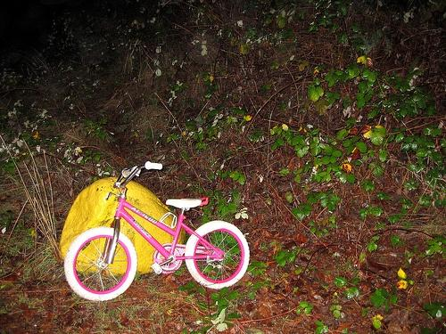 0.357977 | 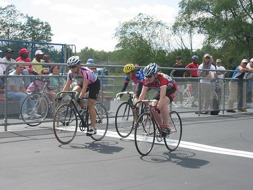 0.415171 | 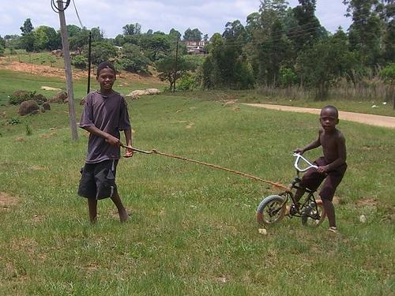 0.417984 | 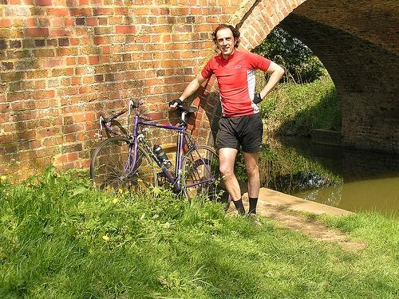 0.429887 | 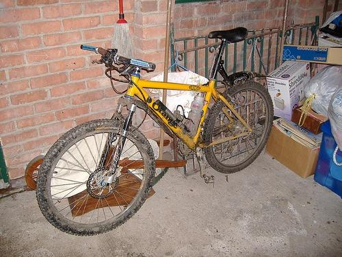 0.448138 | 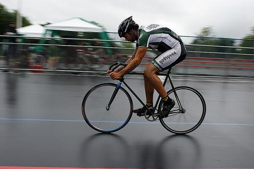 0.471765 | 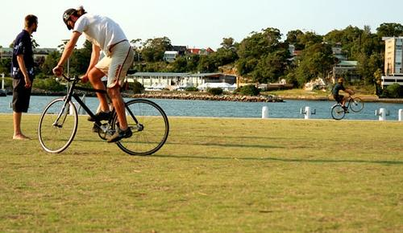 0.474432 | 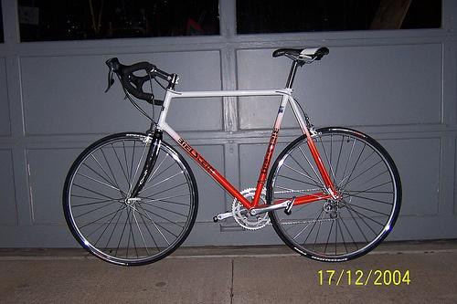 0.482572 | 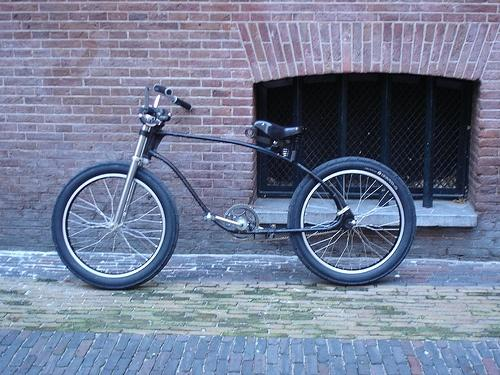 0.488793 |
| Target image 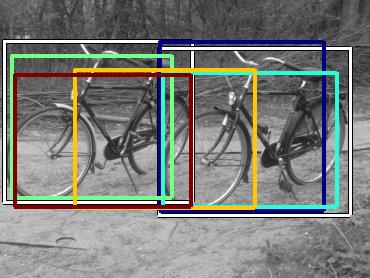 | 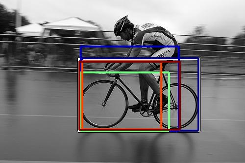 15687.084961 | 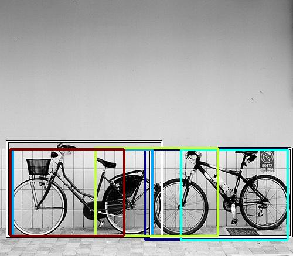 11051.800781 | 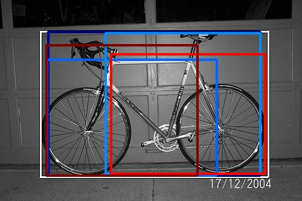 9136.158203 | 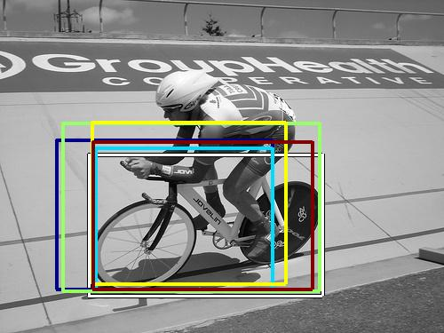 8132.021973 | 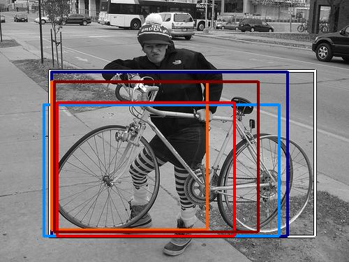 7714.532227 | 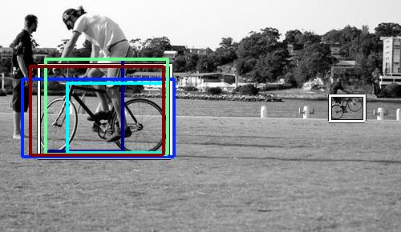 7647.391602 | 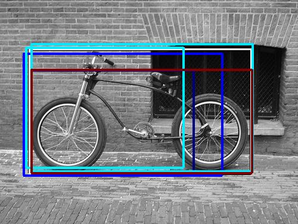 7072.920410 | 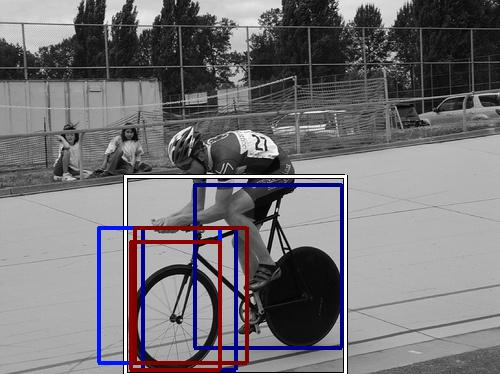 7032.647949 | 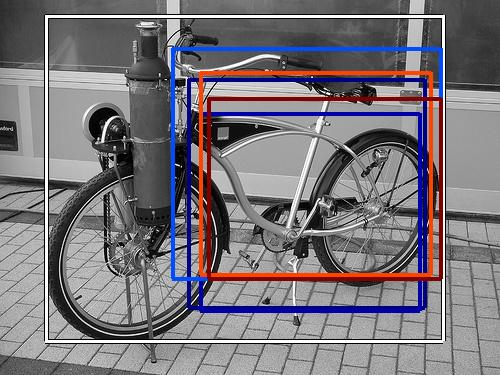 6755.130371 | 6729.602539 |
| Target image 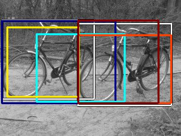 | 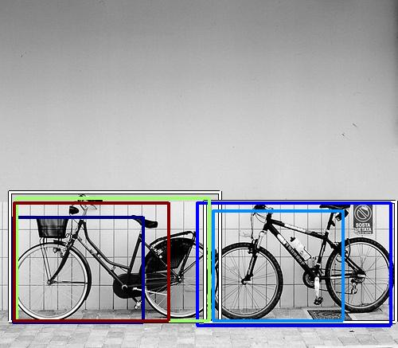 15086.004883 | 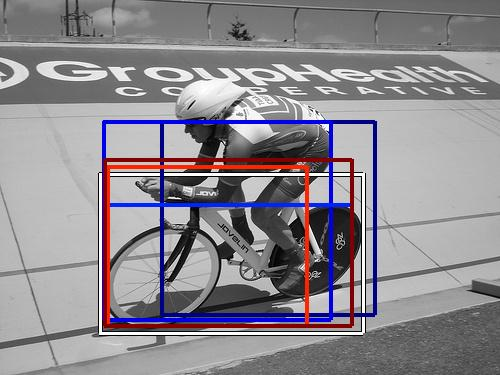 12062.054688 | 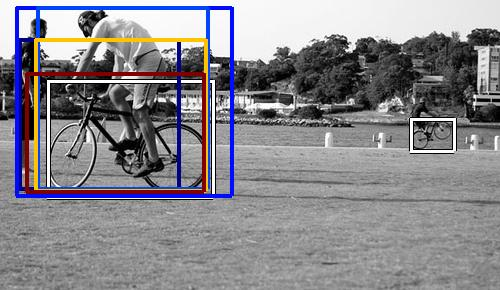 9526.729492 | 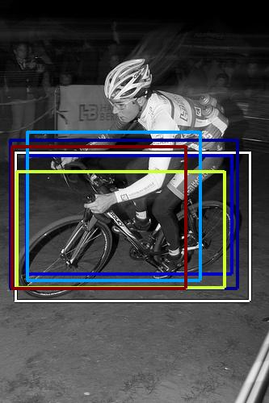 9496.017578 | 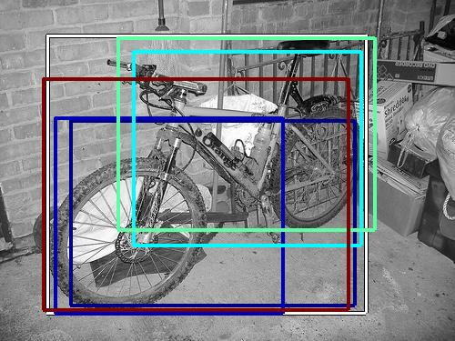 9420.864258 | 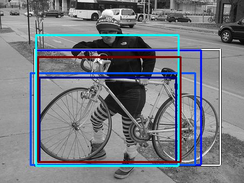 9063.013672 | 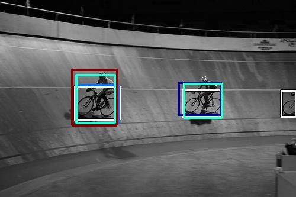 7845.110352 | 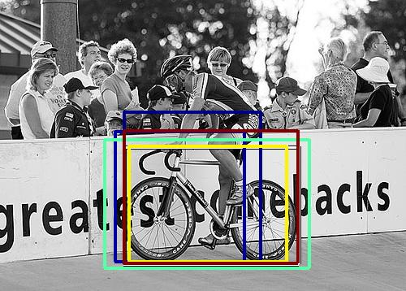 7047.931641 | 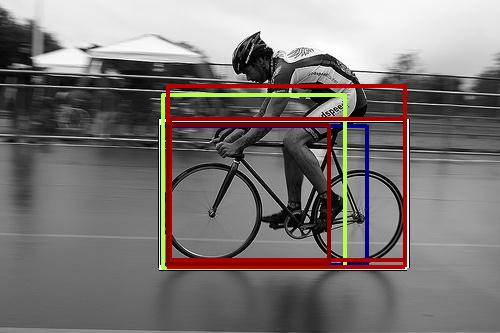 6639.733398 | 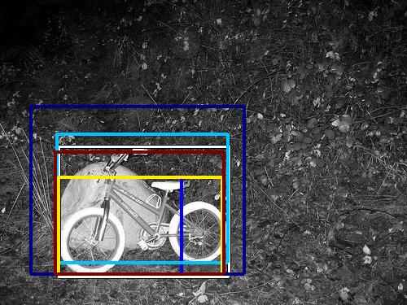 6181.160645 |
| Target image 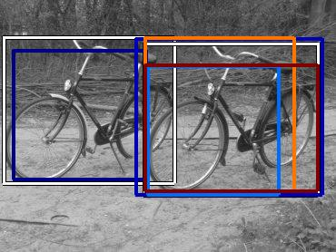 | 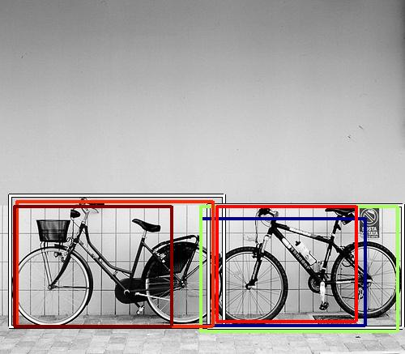 14171.877930 | 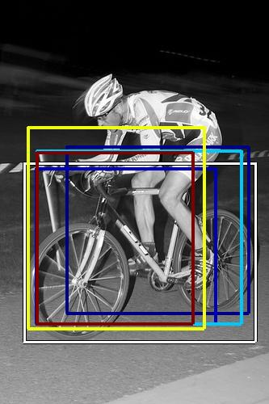 12551.974609 | 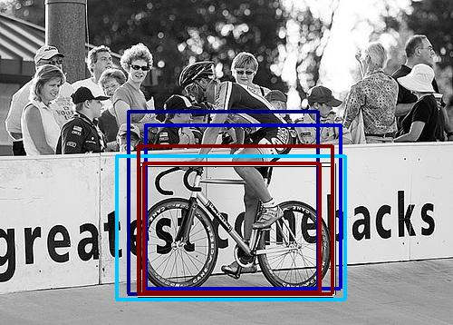 10941.466797 |  10656.464844 | 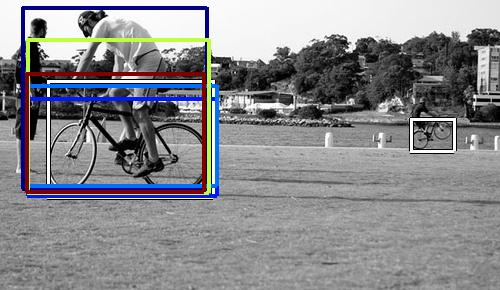 10206.791016 | 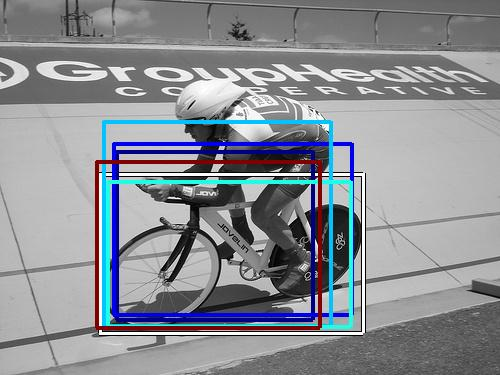 9862.981445 | 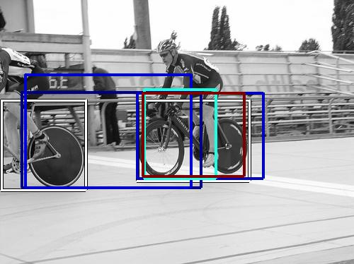 9859.189453 | 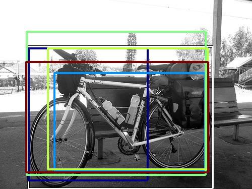 9824.423828 | 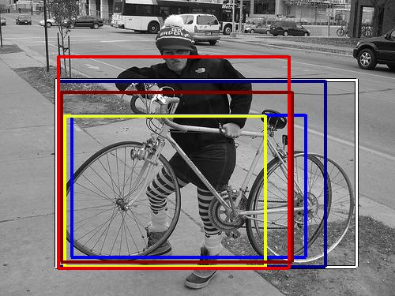 8351.614258 | 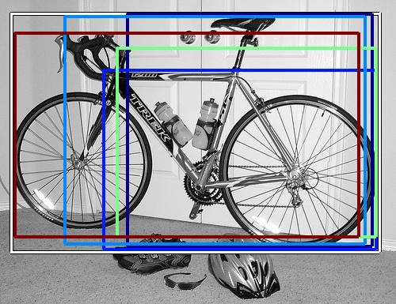 8142.432617 |
Target image | 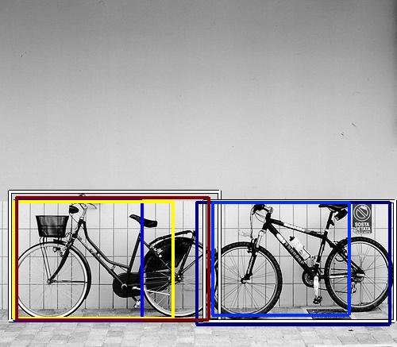 12625.216797 | 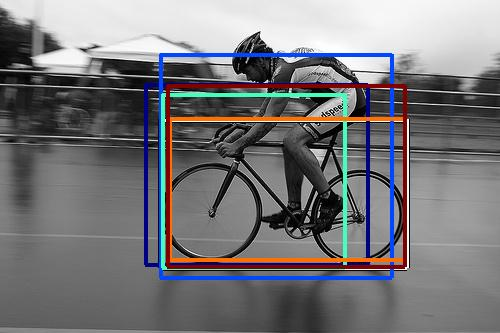 12450.016602 | 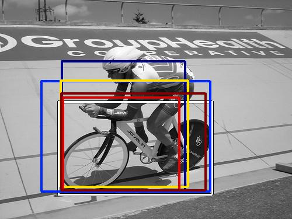 12380.119141 | 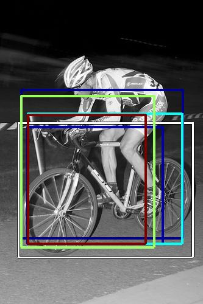 12325.835938 | 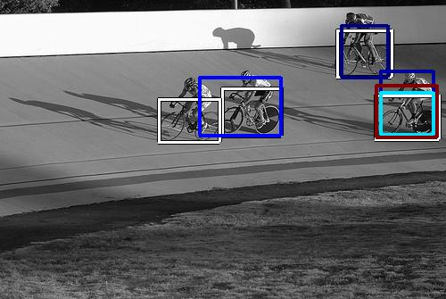 10066.719727 | 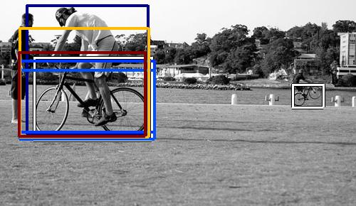 10032.279297 | 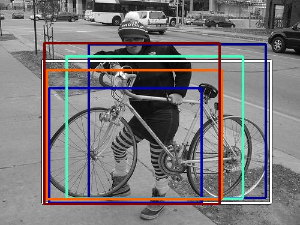 9721.803711 | 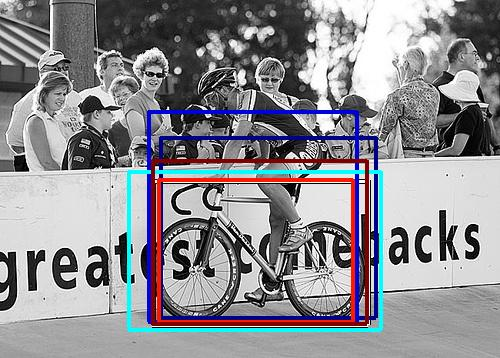 8706.304688 | 8296.653320 | 7900.223633 |